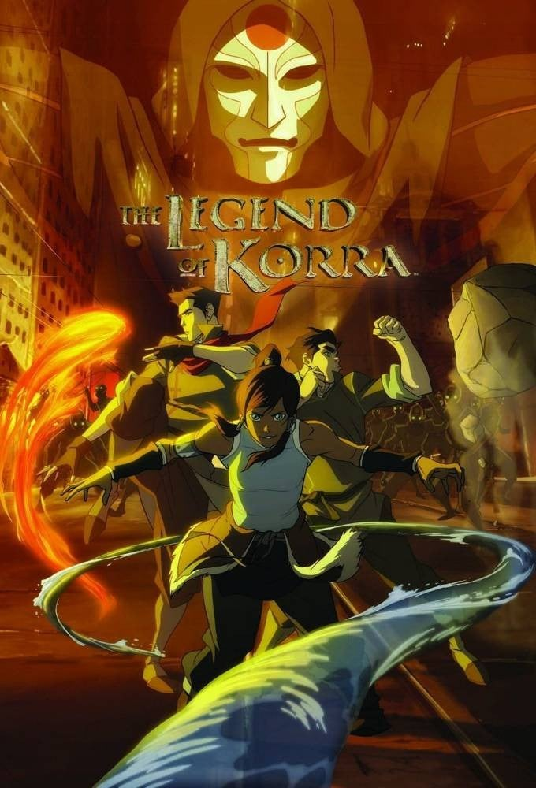
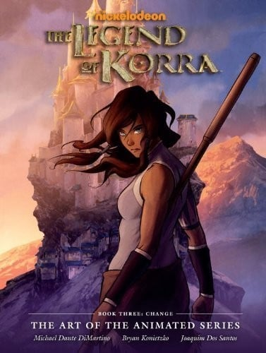
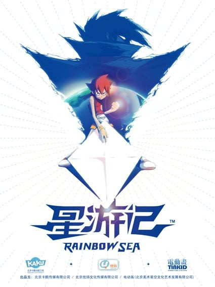

题材交叉
既在「高分热血动漫推荐」，也在「高分科幻动漫推荐」。

7.4「科拉传奇 第一季：气和」（2012）是一部TV，制作Nicktoons Studios，类型包括奇幻、战斗、科幻，评分7.4，在本站出现在5份片单中，例如高分国漫推荐、高分热血动漫推荐、高分科幻动漫推荐。页面只做片单对照，不提供播放。本作时间线设置在《降世神通：最后的气宗》本篇70年后，主角科拉(Korra)是继安昂之后的下一位女性神通，诞生于南方水族部落，性格热情叛逆，故事开始时她已掌握了水、火、土三种元素，接下来将在安昂与卡塔拉之子丹增(Tenzin)的指导下学习御。
按共享片单数排序，用来找和「科拉传奇 第一季：气和」一起出现的高分动漫。

7.5 7.2
7.2 7.0
7.0
7.9 6.4
6.4 6.4
6.4